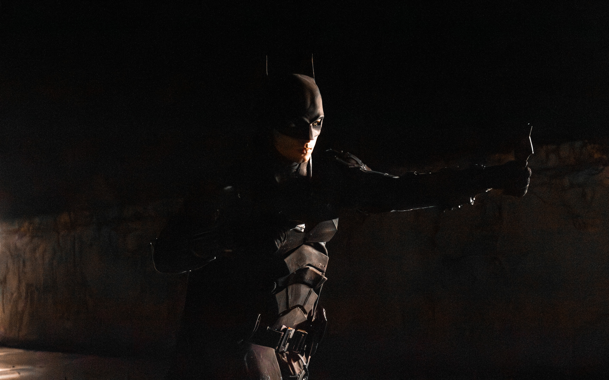
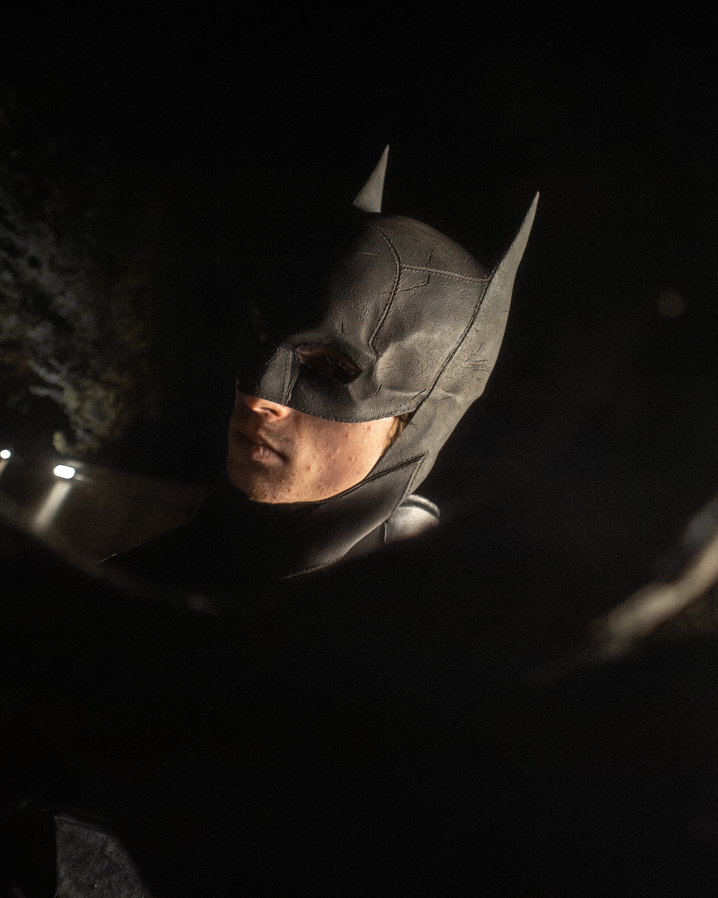
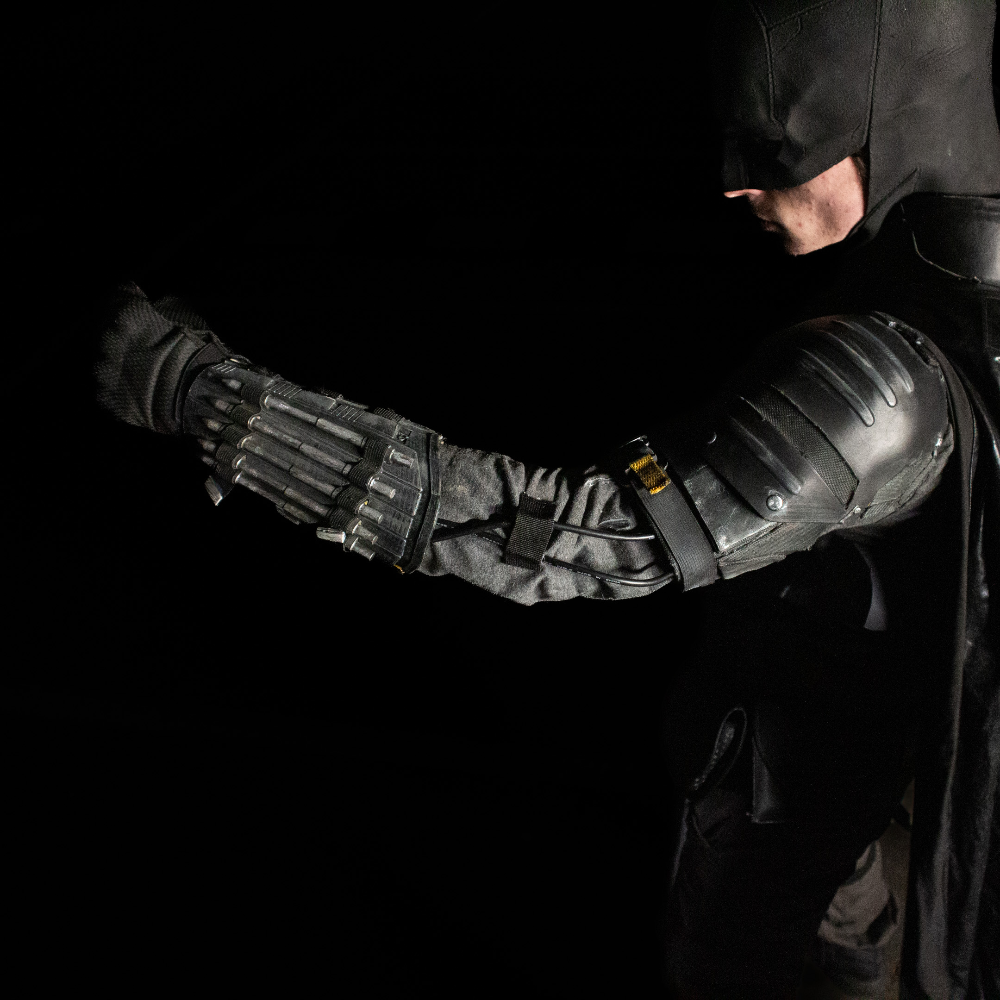
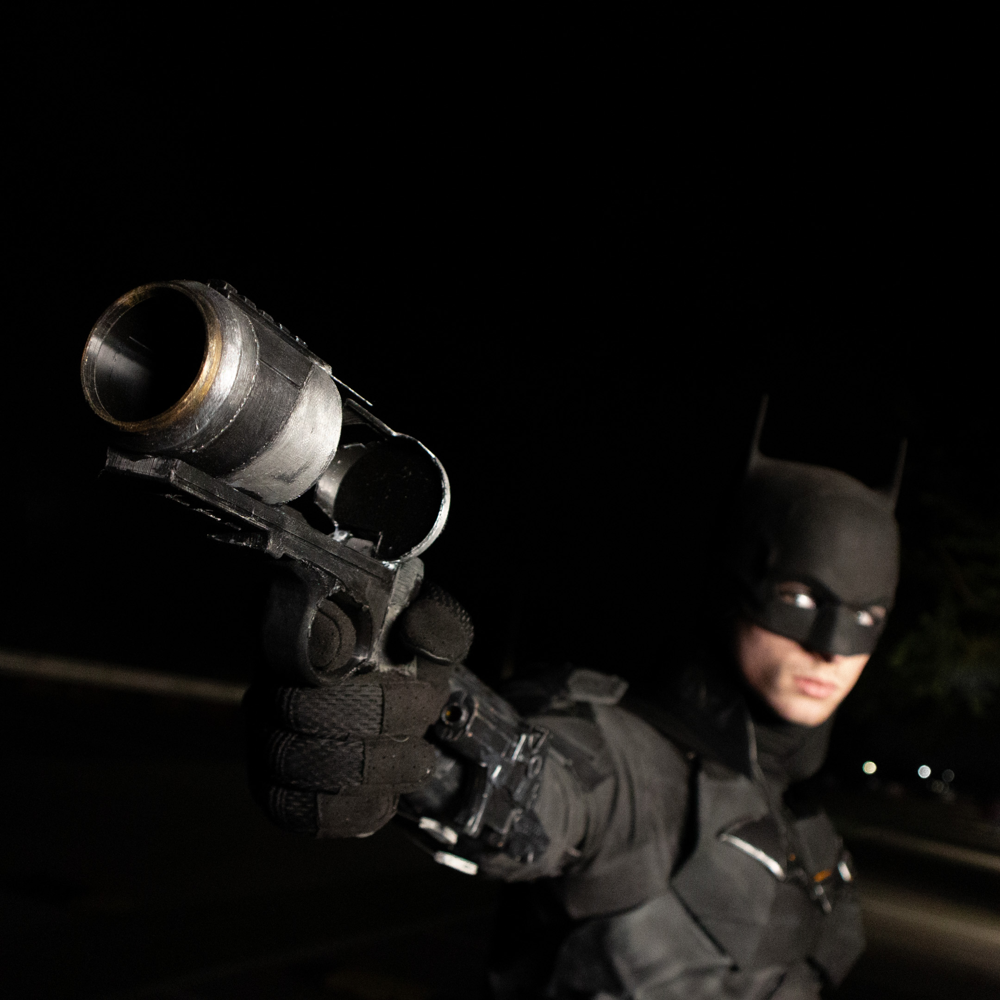
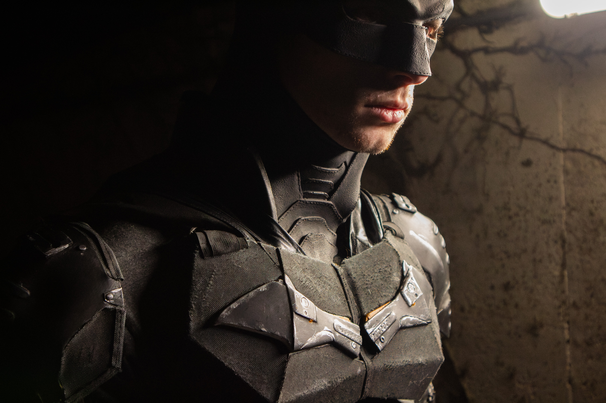

Gabriel Shearer
Projects.

I made this Batman suit in 2024, so it’s one of my earlier builds. The suit is made using a mix of 3D-printed parts, foam, fabric, latex, and other materials. It’s still one of my favourites, although it’s very uncomfortable to wear. The foam in the legs is quite restrictive, and the 3D-printed shoulder pieces limit movement and aren’t very comfortable.
The belt features a 3D-printed grenade launcher with grenades attached, along with a screen-accurate 3D-printed belt buckle. It also includes additional accessories that closely match the original design.




At the time, I didn’t do much sewing, so most of the suit was assembled using hot glue and contact cement. One of my favourite parts of this build is how the armour material turned out. I wish it was slightly darker, but overall I think it still looks really good.
The boots used are screen-accurate, and the mask was bought rather than made, as it was a mould taken from the actual mask used in the movie. However, the movie version was made from leather, while this one is latex.